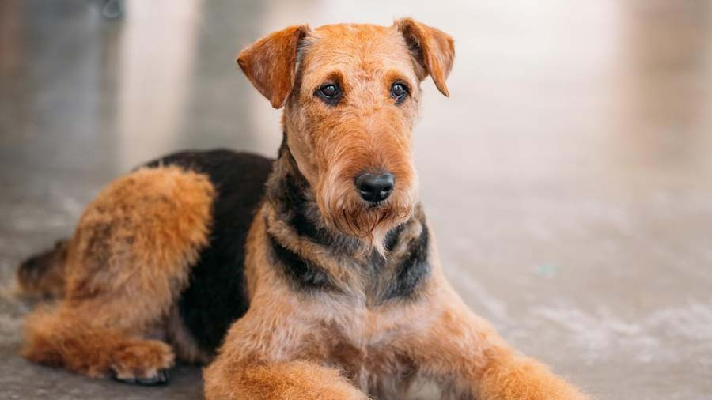
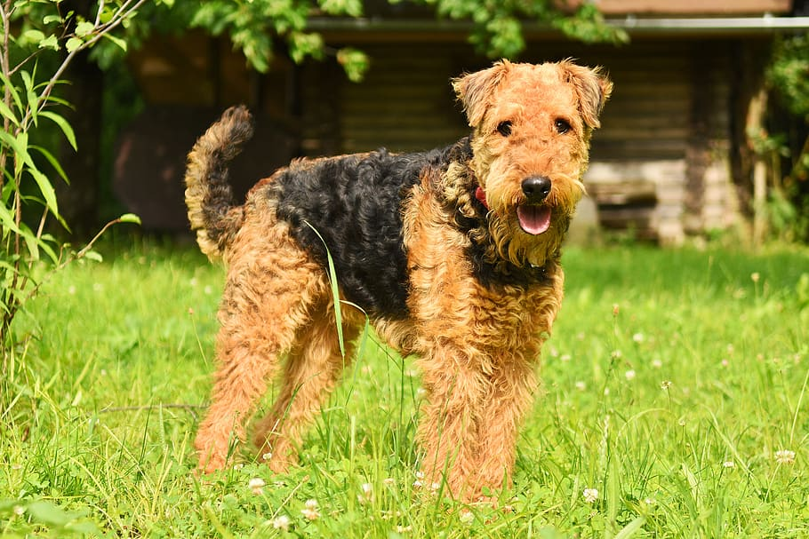
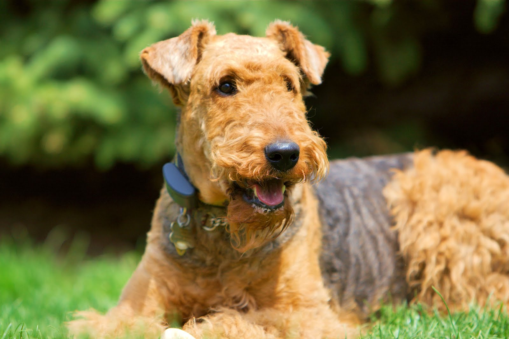
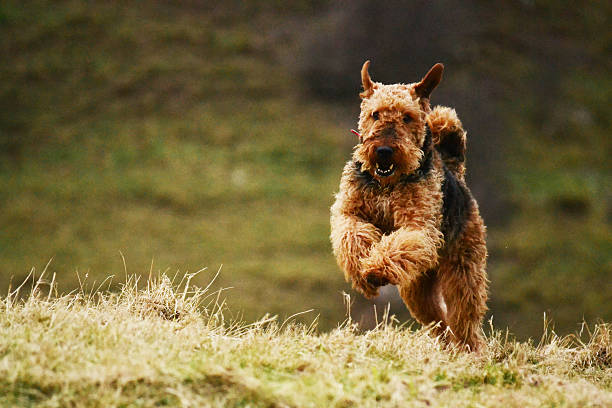

Airedale Terrier

origin
United Kingdom
size
Medium
color
Others
type
Purebred
breed group
Terrier (AKC:1888 & UKC)
character
Smartest
temperament
Alert, Confident, Intelligent, Outgoing
height
22-24 inches (56-61 cm)
weight
50-65 pounds (23-29 kg)
geography
Europe
overview
The Airedale terrier is a neat, upstanding, long-legged terrier, not exaggerated in any way. It has strong round bone and combines strength and agility, enabling it to hunt tough game. Its jaws are strong and punishing. Its gait is free. The coat is hard, dense and wiry; it lies straight and close, with some hair crinkling or waving.
history
The Airedale Terrier (also known as the ‘Waterside Terrier’, ‘Bingley Terrier’, or slightly less modestly the ‘King of Terriers’, for its height) comes from the Airedale valley in West Yorkshire, England. It was bred by crossing the Otterhound with the Black and Tan Terrier for increased ability in Water Rat hunting competitions on the Aire River. The result was a breed with great scenting and Otter hunting skills which could pursue and retrieve game from its den. It was later crossed with the Irish Terrier and Bull Terrier.
The Airedale Terrier was first brought to North America in the 1880’s. Champion Master Briar, born in 1897, is considered to be the patriarch of the breed. Airedale Terriers became renowned as messengers and search animals in World War I. President Roosevelt is quoted as saying ‘An Airedale can do anything any other dog can do and then lick the other dog, if he has to.’ John Wayne’s nickname, ‘The Duke’, was the name of his childhood Airedale Terrier, who accompanied him everywhere he went.
Photo Gallery


